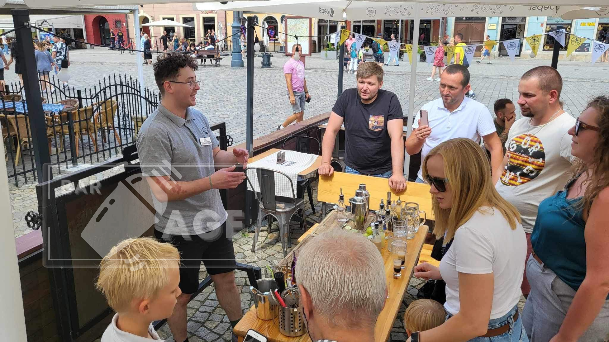

Преподаватель Евгений

В данный момент я бармен в ресторане «Золотой пёс» в городе Вроцлав, Польша.
Для того , чтобы до этого дойти, мне пригодился мой опыт работы в гастрономии, а начал я работать в этой сфере, когда мне было 15 лет. В этом раннем возрасте, но достаточным, чтобы начать зарабатывать свои первые деньги.
Как я попал в гастрономию в 15 лет? Я раздавал листовки с ароматами духов в супермаркете за 10 грн в час, но я так старался, что меня заметили директора французского кафе «Французская сдоба», подошли ко мне и предложили мне поработать у них официантом, предложив мне зарплату достаточную для того, чтобы заинтересовать меня.
Так всё и началось, а дальше я получил карьерный рост в сети франшизы «Французская сдоба» поднявшись с официанта до бариста, с бариста до управляющего сменой за несколько лет. Чуть позже я объехал с администратором данной фирмы Олегом пол Украины открывая новые кафе сети.
Я выполняя функцию человека, который должен был обучать будующий персонал технологиям продажи, психологии общения с гостями, процессу выпечки Курсанов и различных французских слоек и конечно же одного из важнейшего, того, что помогло мне в своё время определиться с выбором направления в жизни – технологии экстрагирования кофе.
Я выполняя функцию человека, который должен был обучать будующий персонал технологиям продажи, психологии общения с гостями, процессу выпечки Курсанов и различных французских слоек и конечно же одного из важнейшего, того, что помогло мне в своё время определиться с выбором направления в жизни – технологии экстрагирования кофе.
Со временем я подрос и понял, что мне больше хочется не только делать кофе, но ещё и кофейные коктейли, которые были в карте того заведения, но мне стало мало того опыта, который я получал во «Французской сдобе» и я впервые пошёл попробовать себя в роли бармена в заведение «Арт бургер».
Где в возрасте 18 лет я впервые познакомился с достаточно неплохим выбором крепкого алкоголя, а также набрался первого опыта создания некоторых классических лонг-коктейлей, первыми из которых стали Пина-Колада, Голубая лагуна, джин тоник, куба либре и др. а так же шот-коктейлей таких как Б-52, зелёный мексиканец, Хиросима, БМВ, Дядя Ваня, и др. Кроме этого там же я научился делать кальяны, но это уже совершенно другая история.
